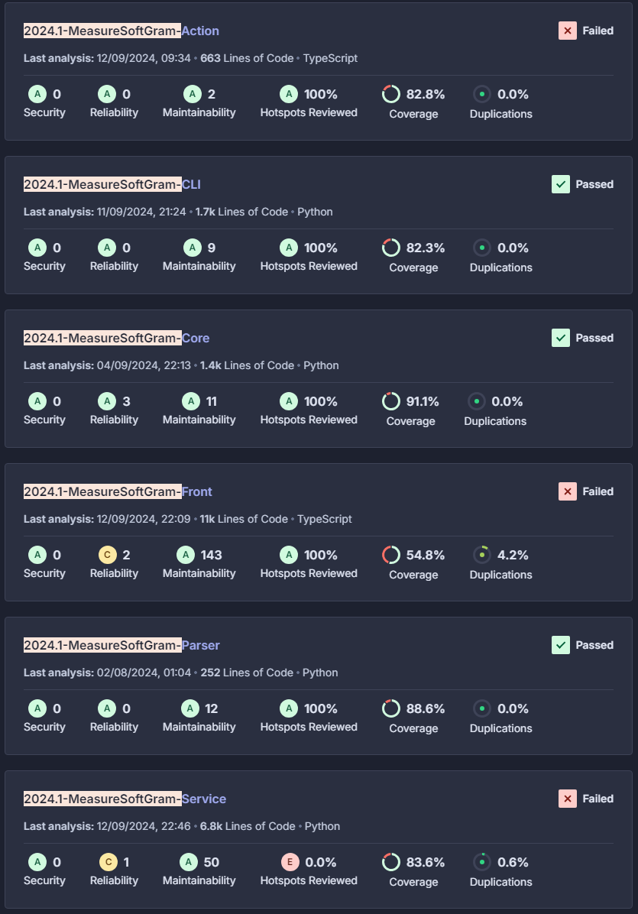

Planejado X Realizado
1. Introdução
Este documento tem como objetivo apresentar a comparação entre o planejamento e a execução do projeto. Serão avaliados e comparados o Backlog e as User Stories (US), além de aspectos como Custo, Risco e Qualidade.
2. Backlog
2.1. Planejado
- US001 - Eu, Paulo, desejo utilizar o diff na cli para que eu consiga ver a diferenca entre release planejada e realizada
- US002 - Eu, Valéria, desejo utilizar o diff na interface web para que eu consiga ver a diferenca entre release planejada e realizada
- US003 - Eu, Valéria, desejo utilizar o norm_diff na interface web para que eu consiga ver a diferenca entre release planejada e realizada
- US004 - Eu, Paulo, desejo utilizar o norm_diff na cli para que eu consiga ver a diferenca entre release planejada e realizada
- US005 - Eu, como Valéria, visualizar as medidas de Throughput no meu repositório, para que eu possa analisar e observar o comportamento da vazão de aceitação, das histórias de usuário, em um período de tempo.
- US006 - Eu, como Valéria, desejo filtrar por data, a medida de CI_Feedback_Time para que, eu possa analisar e observar o comportamento do sistema de CI, em um período de tempo
- US007 - Eu, como Paulo, desejo visualizar o sistema na língua inglesa para que mais pessoas possam entender a ferramenta
- US008 - Eu, como Valéria, desejo importar repositórios do github para que consiga integrar o github com o produto.
- US009 - Eu, como Amanda, quero ver dashboards detalhados da release para comparar a qualidade do produto entre releases
-
US010 - Eu, como usuário, desejo comparar a característica de Eficiência e Desempenho entre releases
- BUG002 - Corrigir campos extras provenientes da API do github
- BUG006 - Corrigir modo de consulta de issues para Throughput
- BUG007 - Corrigir modo de consulta de workflows para CI_feedback_time
- BUG008 - Separar calculate entre tratamento de dados do Github e Sonar
- BUG026 - Arquivo extraido com nome errado na cli
- BUG034 - Corrigir o posicionamento dos pontos nos graficos em products/{product}/repositories/{repository}
-
BUG040 - Nao eh possivel definir o caminho para onde as metricas do github sao extraidas
- ENH002 - Desejo filtrar por data medidas de Throughput do GitHub no CLI, para que eu possa ter as métricas em um período de tempo
- ENH003 - Refatorar gráfico para parecer equalizador
- ENH004 - Melhorar usabilidade do fluxo de release
- ENH005 - Melhorar usabilidade do fluxo de Login e Cadastro
- ENH006 - Melhorar usabilidade da Home, Barra Lateral e "Entenda o produto"
- ENH007 - Melhorar usabilidade do fluxo de Adição de Organização e Produto
- ENH008 - Melhorar usabilidade do fluxo de Listagem de Organizações e Produtos
- ENH010 - Sanitizar a Service
- IDV
2.2. Validado
- US001 - Eu, Paulo, desejo utilizar o diff na cli para que eu consiga ver a diferenca entre release planejada e realizada
- US002 - Eu, Valéria, desejo utilizar o diff na interface web para que eu consiga ver a diferenca entre release planejada e realizada
- US004 - Eu, Paulo, desejo utilizar o norm_diff na cli para que eu consiga ver a diferenca entre release planejada e realizada
- US006 - Eu, como Valéria, desejo filtrar por data, a medida de CI_Feedback_Time para que, eu possa analisar e observar o comportamento do sistema de CI, em um período de tempo
- BUG002 - Corrigir campos extras provenientes da API do github
- BUG006 - Corrigir modo de consulta de issues para Throughput
-
BUG007 - Corrigir modo de consulta de workflows para CI_feedback_time
- ENH002 - Desejo filtrar por data medidas de Throughput do GitHub no CLI, para que eu possa ter as métricas em um período de tempo
2.3. Defeitos/Histórias não corrigidos
- US009 - Eu, como Amanda, quero ver dashboards detalhados da release para comparar a qualidade do produto entre releases
- BUG034 - Corrigir o posicionamento dos pontos nos graficos em products/{product}/repositories/{repository}
- BUG040 - Nao eh possivel definir o caminho para onde as metricas do github sao extraidas
2.3. Análise
O grupo demonstrou proatividade ao alinhar os problemas encontrados com o cliente, gerando um backlog extenso. No entanto, devido a imprevistos durante o desenvolvimento, muitos itens foram implementados, mas não completamente validados, resultando na sua não conclusão. Uma das histórias, a US009, foi removida da release final por falta de tempo para seu alinhamento e desenvolvimento.
3. Custo
4. Tempo
4.1. Planejado
| Releases | incicio | Fim |
|---|---|---|
| Release 1 | 14/07/2024 | 31/07/2024 |
| Release 2 | 01/08/2024 | 21/08/2024 |
| Release MVP | 22/08/2024 | 03/09/2024 |
4.2. Executado
| Releases | incicio | Fim |
|---|---|---|
| Release 1 | 24/07/2024 | 31/07/2024 |
| Release 2 | 31/07/2024 | 21/08/2024 |
| Release 3 | 21/08/2024 | 04/09/2024 |
| Release MVP | 04/09/2024 | 11/09/2024 |
4.3. Análise
Durante o desenvolvimento do projeto, identificou-se a necessidade de disponibilizar mais releases para que o cliente pudesse testar os itens à medida que fossem concluídos e liberados para homologação, resultando na criação da release 3.
5. Qualidade
5.1. Planejado
Foi planejado que, de acordo com as métricas do Sonar, teríamos as seguintes metas:
| Métrica | Critério |
|---|---|
| Coverage | Pelo menos 80% de cobertura |
| Bugs | Classificado como "A" |
| Security Hotspots | Classificado como "A" |
| Duplication | Até 3.0% de duplicação de código |
5.2. Executado

5.3. Análise
Devido aos valores que o projeto já tinha inicialmente e dos problemas que foram encontrados durante o desenvolvimento, o foco foi voltado a melhorar a qualidade do código que era implementado e em atingir métricas melhores do que as iniciais.
7. Risco
7.1. Tabela de Resumo
7.2. Análise
Durante o andamento das sprints, foi observada uma redução na probabilidade de certos riscos, como R01 (Dificuldade com as tecnologias definidas), R06 (Divergência nos horários disponíveis dos integrantes), R013 (Falta de disponibilização de releases para o cliente testar) e R17 (Dependência entre atividades), além de ajustes nos impactos que os riscos poderiam ter na continuidade do projeto, não havendo nenhum risco que tenha inviabilizado o andamento do projeto.
Versionamento
| Data | Autor | Descrição | Versão |
|---|---|---|---|
| 13/09/2024 | Brenno Oliveira | Criação do documento | 0.1 |